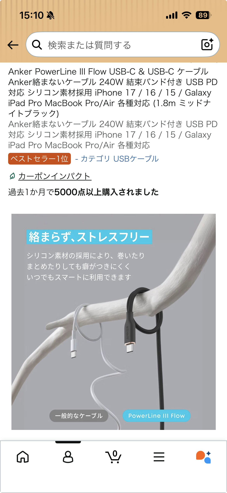

当サイトはアフィリエイトプログラムに参加しています。リンク先で購入が発生した場合、紹介料を得ることがあります。掲載内容は筆者の実機レビューと公表スペックに基づきます。
Anker PowerLine III Flow（1.8m）は「やや細めだが肌触りが良い」「長さがちょうど良い」という口コミどおり、寝返りやデスク移動でケーブルが突っ張りにくい絶妙な長さです。1mだと短く感じる環境でも、1.8mは余裕がありながら絡みにくい設計で、持ち運び時は付属の結束バンドでまとめられるため出張やカバン内の整理に便利でした。
まず触った瞬間に分かるのは被覆の質感。シリコン系のしなやかさで手触りが良く、バッグの中で他の物と擦れても表面が傷つきにくい印象です。細めのケーブルながら内部の導体設計がしっかりしており、240Wの高出力にも対応するため、ノートPCからスマホまで一本で賄えるのは大きな利点。
また「絡まない」設計は日常でのストレスを確実に減らします。実際に寝返りを打つ環境で1mケーブルが突っ張っていた私の環境でも、1.8mに替えたことで余裕が生まれ、ケーブルの引っ張られ感がほぼ無くなりました。出張時は結束バンドで他のケーブルとまとめておけるので、荷物の取り出しがスムーズです。
「やや細め」という感想はあります。太いケーブルが好みの方や、極端に乱暴に扱う用途（車載での常時引き回し等）には、より太めで編組の耐久ケーブルが向く場合があります。ただし、通常のデスクワークやモバイル用途では十分な耐久性を感じました。高出力を扱う際は、接続機器と充電器が240W対応であることを確認してください。
・デスクではモニター裏からPCまで余裕を持って配線できる1.8mが便利。
・出張時は結束バンドでイヤホンや充電器とまとめておけば、空港のセキュリティやホテルでの取り回しが楽。
・スマホとノートPCを同時に使う環境では、240W対応の充電器と組み合わせれば高速充電が可能。
総合的に見て、Anker PowerLine III Flow 1.8mは「長さ」「肌触り」「携帯性」のバランスが良く、日常使いから出張まで幅広く活躍します。口コミで挙がっていた「やや細めだが長さがちょうど良い」「結束バンドでまとめられるのが偉い」という評価は実際の使用でも納得できるポイントでした。高出力対応で将来の機器にも安心して使えるため、一本持っておくと便利です。
購入を検討している方は、下のリンクから仕様や価格を確認してみてください。